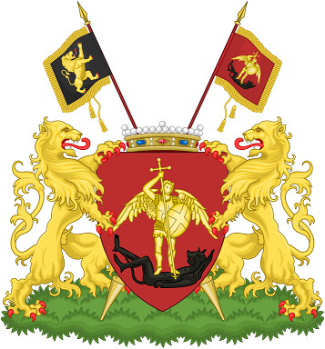

Bienvenue sur notre site consacré à Bruxelles.

Bruxelles (Brussel en néerlandais, Brüssel en allemand, Brussels en anglais) est la capitale de la Belgique et l'un des sièges de l'Union Européenne et de plusieurs de ses institutions. Elle est le siège des gouvernements et parlements de plusieurs des entités fédérales qui composent la Belgique, ainsi que de nombreuses organisations internationales, dont l'OTAN.
Dans ce site, vous trouverez diverses informations concernant :